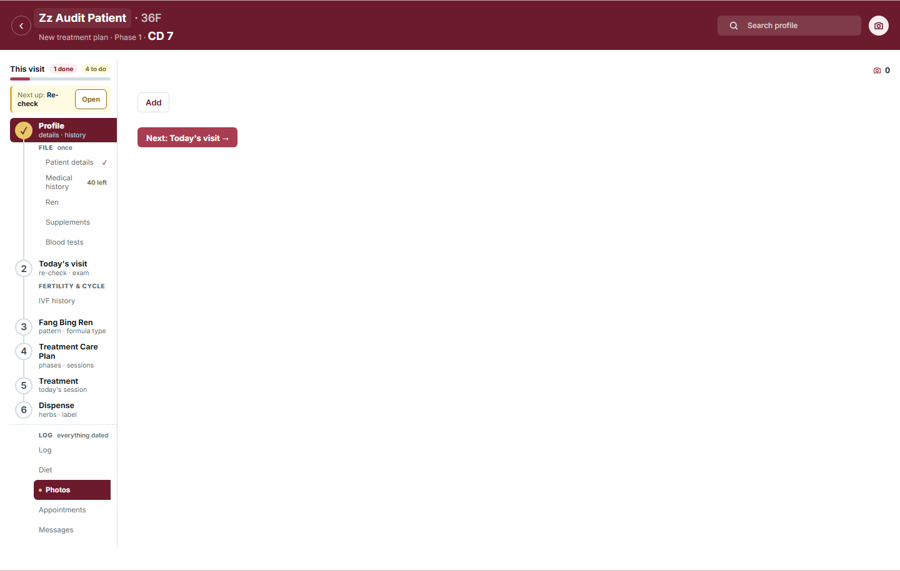
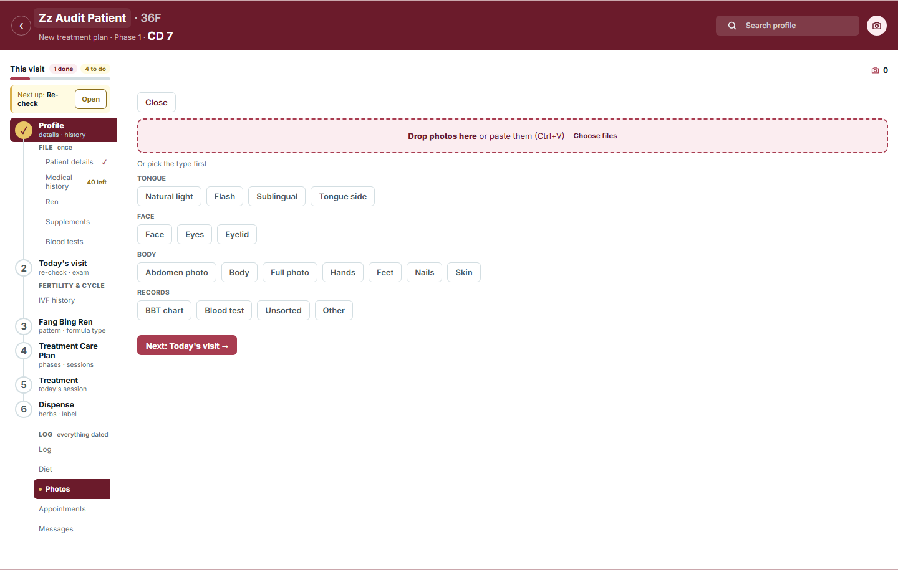
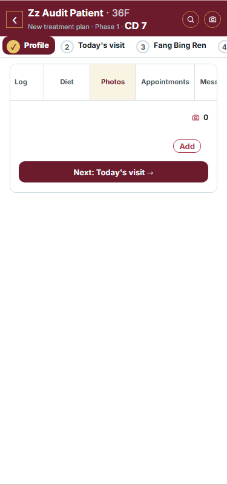
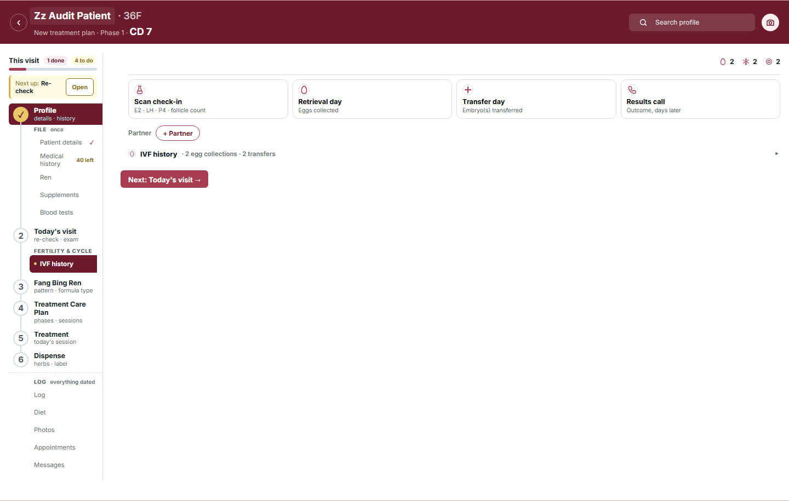
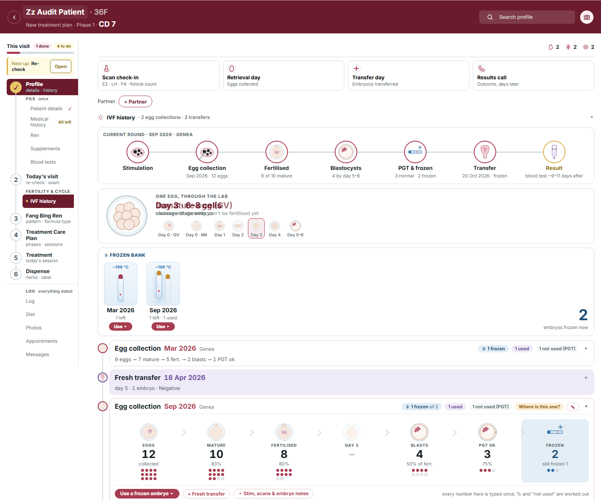
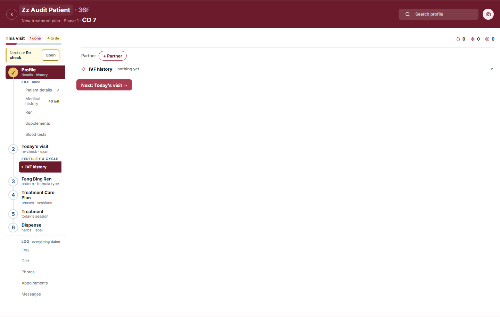
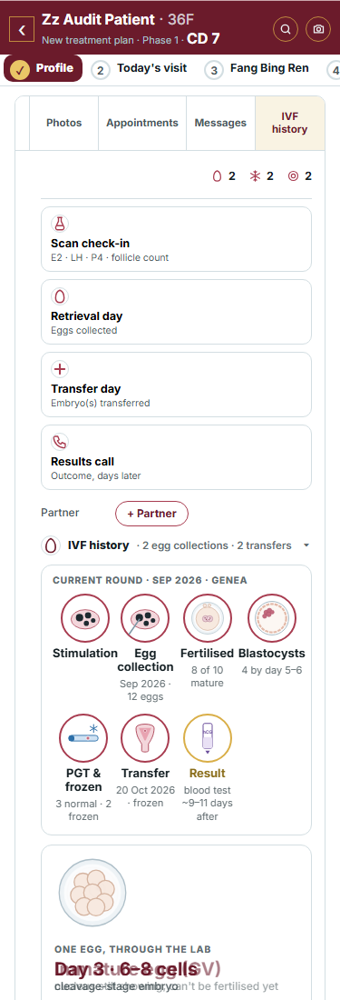

Your call on the 29 Oct audit (idea 4, "all three"): Photos opens on a camera tile and a drop zone with the kinds under them, and IVF history opens with its first round showing. Blood tests was built on 29 Oct. Measured on your 27 Oct export first; the IVF pictures are the real page as it would open.
Today

After Add: a dashed drop box, "Or pick the type first", then the kinds.

Her pick, drawn
No Add tap: the tile and the drop zone are the page. The tile opens the phone's own sheet (camera or library) or the computer's file chooser; each photo then gets its kind, as a drop does today. A kind chip still opens the camera for that kind. The "Or pick the type first" line goes (no how-to text). With photos on file the page stays as it is: the strip, and + Add opens this same block.
Today

Her pick, drawn
No drop zone on a phone (nothing to drag): the tile alone, full width, then the kinds.
Today

Her pick (the real page, opened as it would open)

The fold opens by itself, and the round this plan is on (else the latest) opens with it; earlier rounds and transfers stay one line each. Closing a round or the fold still sticks for that patient, as it does now.
Seen on the way: in the "One egg, through the lab" card two titles print over each other ("Day 3 · 6–8 cells" over "Mature egg"). To be checked in the real page while building; fixed if it is real and not the picture's timing.
Today

Her pick (the real page)
The first action is on the page: + Egg collection. One tap starts the round.
Her pick (the real page, 375px)
